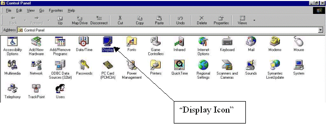
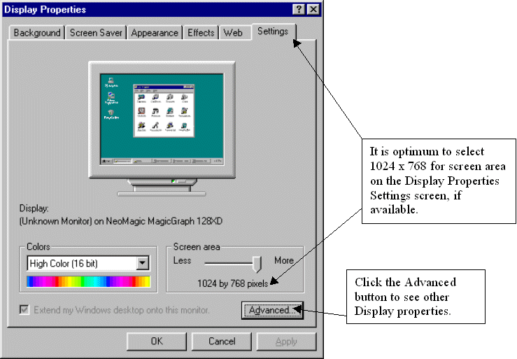
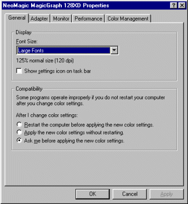
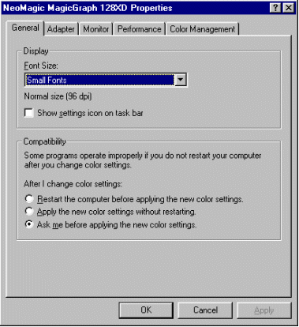

How to Correct Font Size to Fully See the ProFume Fumiguide
Depending on settings in the Microsoft Windows operating software Control Panel, different views of the ProFume Fumiguide will be seen. These views can be adjusted in the Windows Control by following the steps below.
Click on the Start button and select Settings and Control Panel.

Within Control Panel, double click on the Display icon.

Next, go to the Settings tab within the Display Properties. The optimum Screen area settings is 1024 x 768.

If the above adjustment does not allow full view of the ProFume Fumiguide, another adjustment can be made by clicking on the Advanced button.
If Display Font Size is "Large Fonts" under the General tab, select "Small Fonts" to display the full program screen.

Notice the "Small Fonts" option from the Font Size pull-down menu. This option will display the font in normal size and full screen view of the program.
